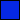

VERIFICA QPF SU AREE DI VIGILANZA ITALIANE OSSERVATI VS. PREVISIONI
Il colore di ogni area rappresenta il picco massimo di qpf osservata all'interno della giornata di verifica:
no pioggia 0mm < QPF<= 15mm 15mm < QPF <= 30mm  QPF > 30mm
Centra mappa:
Italia
Nord Italia
Centro Italia
Sud Italia
Isole